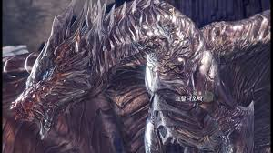

크샬 다오라 ( Kushala Daora )
- Monster Hunter World
- Nergigante
- teo-teskatory
- kusyaldaora
몬스터 헌터 시리즈에 등장하는 몬스터. 《몬스터 헌터 도스》의 간판 몬스터이다.
고룡종에 속하는 몬스터로 "강룡(鋼龍)"이라는 별명 그대로 강철같은 비늘을 가지고 하늘을 날아다니는 용이다. 녹슨 크샬다오라는 "창강룡(錆鋼龍)"이라 불리운다. 고룡종의 큰 특징 중 하나인 배리어 능력을 가지고 있으며, 크샬다오라의 배리어는 온몸에 회오리를 감아 적이 접근하지 못하게 하는 바람 배리어이다. 이때 발생하는 풍압은 풍압(대)보다 강한 일명 용풍압으로 단순히 몸을 움츠리는 정도가 아니라 아예 주저앉게 만들어 경직시간이 더 길어진다. 이러한 배리어를 만드는 원리는 불명이었지만, 몬스터 헌터: 월드의 설정집을 통해 뿔에서 전자파를 발생시켜 바람 배리어를 조절하는 것으로 밝혀졌다.

찾아보기 힘든 허물을 벗는 용으로, 평소에는 회색에 가까운 은색에서 마치 비늘이 녹스는 것처럼 적갈색이 되고, 그 후 허물을 벗으면 밝은 은색이 되어 나온 후 다시 광택이 빠져 은회색으로 돌아온다. 회색 상태를 강룡, 적갈색 상태를 창강룡이라 부른다. 평소에는 설산 등에서 활동하지만, 허물을 벗을 때, 다시 말해 갈색빛이 되면 성격이 흉폭해지기 때문에 마을이나 요새를 공격하는 등 안 하던 행동을 하기도 한다.[7] 외모와 모션이 간지 넘치고 기품 있어 인기를 얻고 있다.